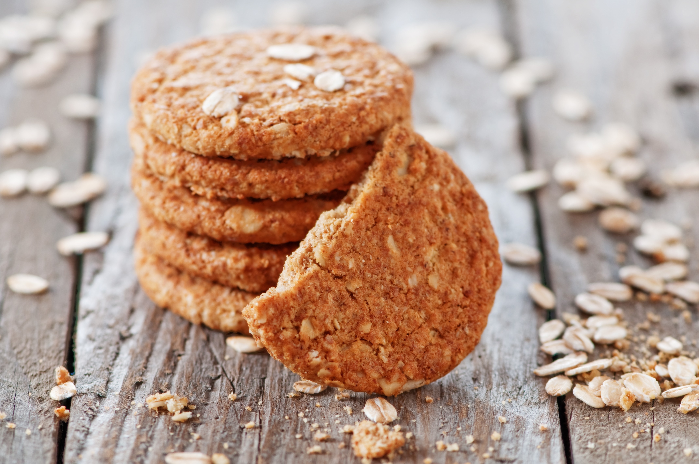

Autora: Gabriela Nuñez
Quem gosta de docinhos caseiros vai adorar esta receita de biscoito de aveia!
Além de delicioso, é ótimo para levar com você na correria do dia a dia! Veja como fazer essa delícia!
Preparo: 60 minutos
Rendimento: 10 porções
Coloque em uma tigela todos os ingredientes e misture-os muito bem.
Com 1 colher de chá coloque porções de massa numa assadeira untada, deixando um espaço de 5 cm entre um biscoito e outro.
Leve ao forno moderado e asse por 8 a 10 minutos ou até que a superfície esteja seca e as beiradas dos biscoitos ligeiramente douradas.
Deixe esfriar um pouco antes de retirar da assadeira.